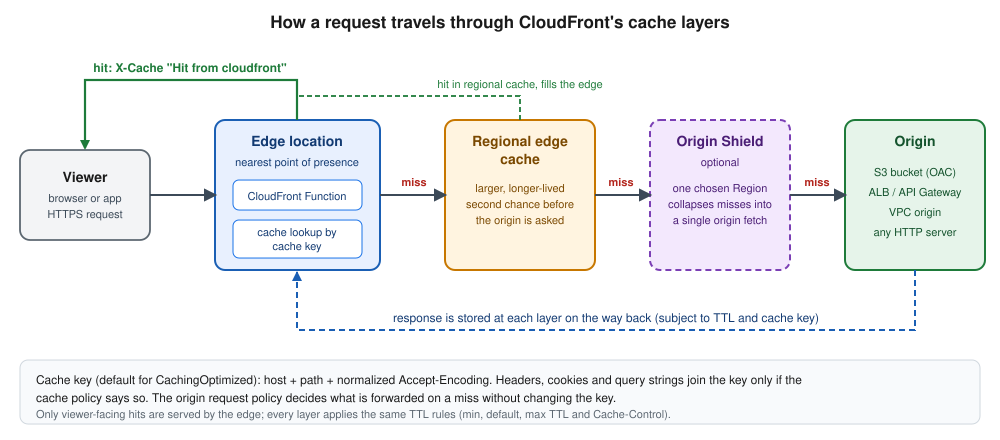
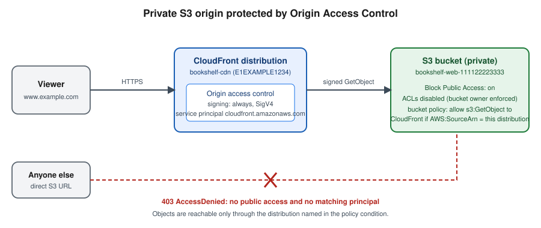

CloudFront and CDN Delivery
|
This content was generated with the assistance of AI and should be verified against the official documentation before being relied on in production. See the section bibliography for the reference material consulted while preparing these pages. |
Commands and behaviour on this page are current for AWS CLI v2 (2.37 line), the CloudFront API version 2020-05-31
and the CloudFront flat-rate pricing plans launched in November 2025 (checked 2026-10-01); re-verify against
aws --version and the linked reference pages before relying on them in a pipeline. Examples use the placeholder
account ID 111122223333, the placeholder distribution ID E1EXAMPLE1234, the placeholder domain example.com and
the Region us-east-1; all are stand-ins for your own values.
Amazon CloudFront is AWS’s content delivery network (CDN): a global network of edge locations that caches your
content close to viewers, terminates TLS there, and fetches from your origin (an S3 bucket, a load balancer, an
API) only when it has to. For Bookshelf it is the front door of the whole application: the static web front end
comes from the private bucket bookshelf-web-<account-id> and requests under /api/* are forwarded to the
alb-bookshelf Application Load Balancer in front of catalog-api and orders-api, so the browser sees a single
HTTPS origin, one certificate and no CORS configuration. This page covers the object model, the recommended private
S3 pattern with Origin Access Control (OAC), the three policy types that control caching and forwarding, custom
domains, invalidation, edge compute, private content, security, logging, the pay-as-you-go and flat-rate pricing
models, and troubleshooting. The bucket itself, its Block Public Access settings and the other ways of securing it
are on S3 Security and Static Hosting; storage classes and uploads are on
S3 Object Storage. Certificates and DNS are on Route 53, DNS and ACM Certificates
and the load balancer on Load Balancers and Gateways. A React build deployed this way is shown
on Build and Deployment. For the Azure counterpart see
Front Door and CDN.
Concepts
- Distribution
-
The unit you create and pay attention to. It has a domain name of the form
dxxxxxxxxxxxx.cloudfront.net, optional alternate domain names (your own hostnames), a TLS certificate, a set of origins and an ordered list of behaviors. Changes are versioned by anETagand take a few minutes to deploy to every edge location. - Origin
-
Where CloudFront fetches content on a cache miss: an S3 bucket (through its Region-specific REST endpoint), a custom HTTP origin (an ALB, API Gateway, a Lambda function URL, any public server), a VPC origin (a private ALB, NLB or EC2 instance), or a Media service endpoint. An origin group pairs a primary and a secondary origin for failover on selected status codes.
- Behavior (cache behavior)
-
A path pattern such as
/api/or.jsplus everything that applies to matching requests: the target origin, the allowed HTTP methods, the viewer protocol policy, the cache policy, the origin request policy, the response headers policy, edge function associations, signed-URL requirements and compression. Patterns are evaluated in order and theDefault (*)behavior catches the rest. - Policies
-
Reusable, named configuration objects attached to behaviors. A cache policy defines the TTLs and the cache key; an origin request policy defines what extra headers, cookies and query strings are forwarded to the origin on a miss without changing the cache key; a response headers policy adds or removes response headers (security headers, CORS). They replace the legacy per-behavior
ForwardedValuessettings. - Origin access control (OAC)
-
The mechanism that lets CloudFront sign its requests to an S3 origin (and to Lambda function URLs and some media origins) so the origin can stay private.
- Edge location, regional edge cache, Origin Shield
-
The cache layers a request can hit. The geography is covered on AWS Global Infrastructure.

Request flow in one paragraph
A viewer resolves www.example.com (a Route 53 alias to the distribution) and opens HTTPS to the nearest edge
location. CloudFront picks the first behavior whose path pattern matches, runs any viewer-request function, computes
the cache key and looks it up. On a hit the object is returned immediately. On a miss the request moves to the
regional edge cache and, if enabled, Origin Shield; only after both miss does CloudFront contact the origin, signed
by the OAC for S3. The response is stored at each layer according to the TTL rules and returned, with any
response headers policy applied. Concurrent misses for the same key are collapsed into one origin request.
Derived from How CloudFront delivers content and Standard distributions.
Prerequisites for Bookshelf
-
The private bucket
bookshelf-web-<account-id>with Block Public Access on, ACLs disabled (Object Ownership Bucket owner enforced, the default for new buckets) and the compiled front end uploaded; see S3 Security and Static Hosting. Use the bucket’s REST endpoint (bookshelf-web-<account-id>.s3.us-east-1.amazonaws.com), never the S3 website endpoint. -
The Application Load Balancer
alb-bookshelfwith an HTTPS listener whose certificate covers the origin hostname you give CloudFront (for exampleorigin.example.com); see Load Balancers and Gateways. -
A public ACM certificate for
www.example.comrequested in us-east-1, because CloudFront only reads certificates from that Region regardless of where your workload runs (see Custom domains, HTTPS and Route 53). -
A Route 53 public hosted zone for
example.com(or any DNS provider; Route 53 gives you alias records).
export AWS_REGION=us-east-1
export ACCOUNT_ID="$(aws sts get-caller-identity --query Account --output text)"
export BUCKET="bookshelf-web-${ACCOUNT_ID}"
export DOMAIN=www.example.com
export ORIGIN_DOMAIN=origin.example.com # DNS name of alb-bookshelf, covered by its certificateCloudFront is a global service: most commands do not take a Region, the API endpoint is in us-east-1, and the
metrics and logs delivery APIs live there too. Console links go to the CloudFront console and the Region selector
does not matter, except when you create the ACM certificate and the AWS WAF web ACL, which must be in N. Virginia.
Origin access control for a private S3 bucket
The recommended pattern for a static site is a private bucket that only CloudFront may read. CloudFront
authenticates to S3 with Origin Access Control (OAC): it signs each origin request with Signature Version 4 on
behalf of the service principal cloudfront.amazonaws.com, and the bucket policy trusts that principal only when the
request comes from your distribution (AWS:SourceArn). Older guides and tutorials still show a public bucket
configured as a website, or a CloudFront origin access identity (OAI). Both are outdated: OAI is the legacy
mechanism, does not support SSE-KMS encrypted objects, dynamic PUT or DELETE requests, or S3 buckets in every
Region (including Regions opened after December 2022), and is not available on flat-rate plans, so new work uses OAC.
Migration from an OAI is covered below.

Rules to remember:
-
The origin must be the S3 REST endpoint. A bucket configured as a website endpoint is an ordinary custom HTTP origin; it cannot use OAC (or OAI), which is why it must be public. Website endpoints also lack HTTPS.
-
Set the OAC signing behavior to
always(console: Sign requests (recommended)). The alternativesno-override(sign only if the viewer sent noAuthorizationheader) andnever(turn signing off) exist for special cases. -
Object Ownership must be Bucket owner enforced, the default for new buckets; choose Bucket owner preferred only if you must keep using ACLs for objects uploaded through CloudFront.
-
An S3 Multi-Region Access Point origin needs a different OAC configuration; see the OAC documentation.
In the AWS Management Console
-
Open the CloudFront console → Security → Origin access → Create control setting.
-
Enter the name
bookshelf-web-oac, leave Sign requests (recommended) selected, choose S3 as the origin type and select Create. -
Attach the OAC while creating the distribution (see Creating the distribution) by choosing the S3 origin and Origin access control settings (recommended). The console offers to Copy policy; after the distribution exists, open the bucket in S3 → Permissions → Bucket policy → Edit and paste it, or let the console add it for you where it offers a button.
With the AWS CLI
aws cloudfront create-origin-access-control --origin-access-control-config \
Name=bookshelf-web-oac,Description="Bookshelf static site",SigningProtocol=sigv4,SigningBehavior=always,OriginAccessControlOriginType=s3 \
--query 'OriginAccessControl.Id' --output textCapture the returned ID in OAC_ID. Derived from
aws cloudfront create-origin-access-control
and Restrict access to an Amazon S3 origin.
The bucket policy
Attach this policy to the bucket after the distribution exists (it needs the distribution ID). It allows reads only
for requests made on behalf of that one distribution; save it as bucket-policy.json:
{
"Version": "2012-10-17",
"Statement": [
{
"Sid": "AllowCloudFrontServicePrincipalReadOnly",
"Effect": "Allow",
"Principal": { "Service": "cloudfront.amazonaws.com" },
"Action": "s3:GetObject",
"Resource": "arn:aws:s3:::bookshelf-web-111122223333/*",
"Condition": {
"StringEquals": {
"AWS:SourceArn": "arn:aws:cloudfront::111122223333:distribution/E1EXAMPLE1234"
}
}
}
]
}aws s3api put-bucket-policy --bucket "$BUCKET" --policy file://bucket-policy.jsonDerived from aws s3api put-bucket-policy.
Two refinements matter in practice:
-
To let CloudFront return a clean
404for missing keys instead of403, also grants3:ListBucketon the bucket ARN (not the/*ARN) with the same condition. Without it, S3 answers403 AccessDeniedfor a key that does not exist, because revealing absence would leak information. The single-page-application pattern below turns both intoindex.html, so Bookshelf can live without it. -
If the objects use SSE-KMS with a customer managed key, add a statement to the key policy so the distribution may decrypt them (without it every request fails with
403):
{
"Sid": "AllowCloudFrontServicePrincipalSSEKMS",
"Effect": "Allow",
"Principal": { "Service": "cloudfront.amazonaws.com" },
"Action": ["kms:Decrypt", "kms:Encrypt", "kms:GenerateDataKey*"],
"Resource": "*",
"Condition": {
"StringEquals": {
"AWS:SourceArn": "arn:aws:cloudfront::111122223333:distribution/E1EXAMPLE1234"
}
}
}Key policies are explained on Secrets Manager, Parameter Store and KMS. If you need CloudFront to write to the
bucket (uploads through the distribution), add s3:PutObject to the bucket policy statement and allow the PUT
method on the behavior.
Migrating from an OAI
Add a second statement for the legacy principal next to the OAC statement so access never lapses, switch the origin
to the OAC (edit the origin, set Origin access to the OAC, remove the OAI), wait for the distribution to deploy,
and then delete the OAI statement. The documented migration policy uses a principal of the form
arn:aws:iam::cloudfront:user/CloudFront Origin Access Identity <identity-ID> alongside the service-principal
statement shown above. With the CLI, fetch the configuration (get-distribution-config), put the OAC ID into
OriginAccessControlId, empty OriginAccessIdentity, rename ETag to IfMatch, and send it back with
update-distribution.
Creating the distribution
In the AWS Management Console
-
Open the CloudFront console → Create distribution. The wizard first asks you to choose a pricing plan (Free, Pro, Business, Premium or pay-as-you-go); for learning, the default pay-as-you-go standard distribution gives access to every feature on this page. See Pricing model before choosing.
-
Origin: for Origin type choose Amazon S3 and select the bucket
bookshelf-web-<account-id>(the REST endpoint). For Origin access choose Origin access control settings (recommended) and selectbookshelf-web-oac. Leave Origin Shield off for now. -
Default cache behavior: Viewer protocol policy
Redirect HTTP to HTTPS; Allowed HTTP methodsGET, HEAD; tick Compress objects automatically; Cache key and origin requests → Cache policy and origin request policy → cache policyCachingOptimized; Response headers policySecurityHeadersPolicy. -
Settings: add
www.example.comas an Alternate domain name (CNAME), choose the us-east-1 ACM certificate, set the Security policy (see HTTPS and security policies), Default root objectindex.html, and leave HTTP/2 and HTTP/3 and IPv6 on. Pick a Price class (see Pricing model). -
Select Create distribution. Copy the Distribution ARN shown in the OAC banner, paste the bucket policy (the console offers Copy policy next to the origin) and wait until Last modified changes from Deploying to a date.
-
Add the second origin and behavior: Origins → Create origin with Origin domain
origin.example.com, ProtocolHTTPS only; then Behaviors → Create behavior with Path pattern/api/, that origin, *Viewer protocol policyRedirect HTTP to HTTPS, Allowed HTTP methodsGET, HEAD, OPTIONS, PUT, POST, PATCH, DELETE, cache policyCachingDisabledand origin request policyAllViewer. -
Error pages → Create custom error response for HTTP
403and404, Response page path/index.html, HTTP response code200, so deep links of the single-page application work.
With the AWS CLI
create-distribution takes the whole configuration as one document. The file below describes the Bookshelf front
end: an S3 origin with the OAC, the alb-bookshelf origin, the default behavior for static content with managed
policies, an /api/* behavior for the API, an SPA fallback and a custom domain. Save it as
distribution-config.json after substituting the angle-bracket values:
{
"CallerReference": "bookshelf-cdn-2026-10-01",
"Comment": "bookshelf-cdn",
"Enabled": true,
"DefaultRootObject": "index.html",
"HttpVersion": "http2and3",
"IsIPV6Enabled": true,
"PriceClass": "PriceClass_100",
"Aliases": { "Quantity": 1, "Items": ["www.example.com"] },
"ViewerCertificate": {
"ACMCertificateArn": "arn:aws:acm:us-east-1:111122223333:certificate/<certificate-id>",
"SSLSupportMethod": "sni-only",
"MinimumProtocolVersion": "TLSv1.2_2021"
},
"Origins": {
"Quantity": 2,
"Items": [
{
"Id": "s3-web",
"DomainName": "bookshelf-web-111122223333.s3.us-east-1.amazonaws.com",
"OriginAccessControlId": "<OAC_ID>",
"S3OriginConfig": { "OriginAccessIdentity": "" }
},
{
"Id": "alb-api",
"DomainName": "origin.example.com",
"CustomOriginConfig": {
"HTTPPort": 80,
"HTTPSPort": 443,
"OriginProtocolPolicy": "https-only",
"OriginSslProtocols": { "Quantity": 1, "Items": ["TLSv1.2"] },
"OriginReadTimeout": 30,
"OriginKeepaliveTimeout": 5
}
}
]
},
"DefaultCacheBehavior": {
"TargetOriginId": "s3-web",
"ViewerProtocolPolicy": "redirect-to-https",
"AllowedMethods": {
"Quantity": 2, "Items": ["GET", "HEAD"],
"CachedMethods": { "Quantity": 2, "Items": ["GET", "HEAD"] }
},
"Compress": true,
"CachePolicyId": "658327ea-f89d-4fab-a63d-7e88639e58f6",
"ResponseHeadersPolicyId": "67f7725c-6f97-4210-82d7-5512b31e9d03"
},
"CacheBehaviors": {
"Quantity": 1,
"Items": [
{
"PathPattern": "/api/*",
"TargetOriginId": "alb-api",
"ViewerProtocolPolicy": "redirect-to-https",
"AllowedMethods": {
"Quantity": 7,
"Items": ["GET", "HEAD", "OPTIONS", "PUT", "POST", "PATCH", "DELETE"],
"CachedMethods": { "Quantity": 2, "Items": ["GET", "HEAD"] }
},
"Compress": true,
"CachePolicyId": "4135ea2d-6df8-44a3-9df3-4b5a84be39ad",
"OriginRequestPolicyId": "216adef6-5c7f-47e4-b989-5492eafa07d3"
}
]
},
"CustomErrorResponses": {
"Quantity": 2,
"Items": [
{ "ErrorCode": 403, "ResponsePagePath": "/index.html", "ResponseCode": "200", "ErrorCachingMinTTL": 10 },
{ "ErrorCode": 404, "ResponsePagePath": "/index.html", "ResponseCode": "200", "ErrorCachingMinTTL": 10 }
]
}
}The three UUIDs are the AWS managed policies CachingOptimized, SecurityHeadersPolicy and CachingDisabled,
plus AllViewer for the origin request policy; they are identical in every account (see The three policy types).
PriceClass_100 serves from the cheapest group of edge locations (North America and Europe); omit it for global
delivery. Because the /api/* behavior uses AllViewer, the viewer’s Host header is forwarded to the ALB; use
AllViewerExceptHostHeader instead for API Gateway and Lambda function URL origins, which expect their own host name.
aws cloudfront create-distribution --distribution-config file://distribution-config.json \
--query 'Distribution.[Id,DomainName,ARN]' --output text
export DIST_ID=E1EXAMPLE1234 # use the Id returned above
aws cloudfront wait distribution-deployed --id "$DIST_ID"
# Now that the ARN is known, fill it into bucket-policy.json and apply it
aws s3api put-bucket-policy --bucket "$BUCKET" --policy file://bucket-policy.jsonDerived from
aws cloudfront create-distribution,
aws cloudfront wait distribution-deployed and
All distribution settings reference.
A distribution that has no WAF web ACL, custom domain or certificate is just as valid; remove Aliases and
ViewerCertificate to test with the cloudfront.net name first. The ETag returned by get-distribution is the
--if-match value for every later update-distribution call.
With CloudFormation
CloudFormation is the repeatable way to keep the OAC, the distribution and the bucket policy together. This template creates all three for an existing bucket (the policy references the distribution it is paired with, so there is no manual ID copying):
AWSTemplateFormatVersion: "2010-09-09"
Description: Bookshelf CDN - private S3 origin with OAC, ALB origin for /api/*
Parameters:
BucketName: { Type: String, Default: bookshelf-web-111122223333 }
DomainName: { Type: String, Default: www.example.com }
CertificateArn: { Type: String, Description: ACM certificate in us-east-1 }
OriginDomain: { Type: String, Default: origin.example.com }
Resources:
Oac:
Type: AWS::CloudFront::OriginAccessControl
Properties:
OriginAccessControlConfig:
Name: bookshelf-web-oac
OriginAccessControlOriginType: s3
SigningBehavior: always
SigningProtocol: sigv4
Distribution:
Type: AWS::CloudFront::Distribution
Properties:
DistributionConfig:
Comment: bookshelf-cdn
Enabled: true
DefaultRootObject: index.html
HttpVersion: http2and3
IPV6Enabled: true
PriceClass: PriceClass_100
Aliases: [!Ref DomainName]
ViewerCertificate:
AcmCertificateArn: !Ref CertificateArn
SslSupportMethod: sni-only
MinimumProtocolVersion: TLSv1.2_2021
Origins:
- Id: s3-web
DomainName: !Sub "${BucketName}.s3.${AWS::Region}.amazonaws.com"
OriginAccessControlId: !GetAtt Oac.Id
S3OriginConfig: { OriginAccessIdentity: "" }
- Id: alb-api
DomainName: !Ref OriginDomain
CustomOriginConfig:
OriginProtocolPolicy: https-only
OriginSSLProtocols: [TLSv1.2]
DefaultCacheBehavior:
TargetOriginId: s3-web
ViewerProtocolPolicy: redirect-to-https
Compress: true
CachePolicyId: 658327ea-f89d-4fab-a63d-7e88639e58f6 # CachingOptimized
ResponseHeadersPolicyId: 67f7725c-6f97-4210-82d7-5512b31e9d03 # SecurityHeadersPolicy
CacheBehaviors:
- PathPattern: /api/*
TargetOriginId: alb-api
ViewerProtocolPolicy: redirect-to-https
AllowedMethods: [GET, HEAD, OPTIONS, PUT, POST, PATCH, DELETE]
Compress: true
CachePolicyId: 4135ea2d-6df8-44a3-9df3-4b5a84be39ad # CachingDisabled
OriginRequestPolicyId: 216adef6-5c7f-47e4-b989-5492eafa07d3 # AllViewer
CustomErrorResponses:
- { ErrorCode: 403, ResponseCode: 200, ResponsePagePath: /index.html, ErrorCachingMinTTL: 10 }
- { ErrorCode: 404, ResponseCode: 200, ResponsePagePath: /index.html, ErrorCachingMinTTL: 10 }
BucketPolicy:
Type: AWS::S3::BucketPolicy
Properties:
Bucket: !Ref BucketName
PolicyDocument:
Version: "2012-10-17"
Statement:
- Sid: AllowCloudFrontServicePrincipalReadOnly
Effect: Allow
Principal: { Service: cloudfront.amazonaws.com }
Action: s3:GetObject
Resource: !Sub "arn:${AWS::Partition}:s3:::${BucketName}/*"
Condition:
StringEquals:
"AWS:SourceArn": !Sub "arn:${AWS::Partition}:cloudfront::${AWS::AccountId}:distribution/${Distribution}"
Outputs:
DistributionId: { Value: !Ref Distribution }
DistributionDomain: { Value: !GetAtt Distribution.DomainName }aws cloudformation deploy --template-file cdn.yaml --stack-name bookshelf-cdn \
--parameter-overrides CertificateArn="arn:aws:acm:us-east-1:111122223333:certificate/<certificate-id>"Derived from the AWS::CloudFront::Distribution, AWS::CloudFront::OriginAccessControl and aws cloudformation deploy references. The stack can be deployed in any Region as long as the certificate is from us-east-1; see Infrastructure as Code for stacks, change sets and drift detection.
With the AWS CDK (Java)
The CDK L2 construct S3BucketOrigin.withOriginAccessControl creates the OAC and the bucket policy for you:
import software.amazon.awscdk.services.cloudfront.*;
import software.amazon.awscdk.services.cloudfront.origins.*;
import software.amazon.awscdk.services.s3.Bucket;
Bucket web = Bucket.Builder.create(this, "Web").build(); // private by default
Distribution cdn = Distribution.Builder.create(this, "BookshelfCdn")
.defaultRootObject("index.html")
.defaultBehavior(BehaviorOptions.builder()
.origin(S3BucketOrigin.withOriginAccessControl(web))
.viewerProtocolPolicy(ViewerProtocolPolicy.REDIRECT_TO_HTTPS)
.cachePolicy(CachePolicy.CACHING_OPTIMIZED)
.responseHeadersPolicy(ResponseHeadersPolicy.SECURITY_HEADERS)
.build())
.additionalBehaviors(java.util.Map.of("/api/*", BehaviorOptions.builder()
.origin(HttpOrigin.Builder.create("origin.example.com")
.protocolPolicy(OriginProtocolPolicy.HTTPS_ONLY).build())
.allowedMethods(AllowedMethods.ALLOW_ALL)
.cachePolicy(CachePolicy.CACHING_DISABLED)
.originRequestPolicy(OriginRequestPolicy.ALL_VIEWER)
.viewerProtocolPolicy(ViewerProtocolPolicy.REDIRECT_TO_HTTPS)
.build()))
.build();Derived from the aws-cdk-lib.aws_cloudfront module documentation; CDK basics are on Infrastructure as Code.
The three policy types
A behavior controls caching and forwarding through three independent, reusable policies. Use the managed ones unless you have a reason not to; attach them by name in the console and by ID in the CLI, CloudFormation and SDKs. The IDs below are the current published values (checked 2026-10-01).
| Managed policy | ID | Use it for |
|---|---|---|
Cache policy |
|
Static assets. Minimum TTL 1 second, default 24 hours, maximum 365 days; cache key is the normalized
|
Cache policy |
|
Dynamic or non-cacheable content such as the API: all TTLs 0, nothing in the cache key. |
Cache policy |
|
Origins that send correct |
Origin request policy |
|
Forward every viewer header, cookie and query string to the origin on a miss. |
Origin request policy |
|
API Gateway and Lambda function URL origins, which need the origin’s own |
Origin request policy |
|
Forward |
Response headers policy |
|
Adds |
Response headers policy |
|
Security headers plus permissive CORS including |
Cache policies with a minimum TTL above 0 (such as CachingOptimized) cache an object for at least that long even if
the origin says no-store or private, so never attach them to personalised responses. The CORS policy IDs are
convenient for a quick start; for production prefer a custom policy listing your real origins.
Creating your own policies
A custom cache policy is the right tool when the cache key must include something specific, such as a language
cookie or a v query string, while ignoring everything else (which keeps the hit ratio high):
cat > cache-policy.json <<'EOF'
{
"Name": "bookshelf-api-catalog",
"Comment": "Cache GET /api/catalog by query string and Accept-Language",
"MinTTL": 0,
"DefaultTTL": 60,
"MaxTTL": 300,
"ParametersInCacheKeyAndForwardedToOrigin": {
"EnableAcceptEncodingGzip": true,
"EnableAcceptEncodingBrotli": true,
"HeadersConfig": { "HeaderBehavior": "whitelist", "Headers": { "Quantity": 1, "Items": ["Accept-Language"] } },
"CookiesConfig": { "CookieBehavior": "none" },
"QueryStringsConfig": { "QueryStringBehavior": "all" }
}
}
EOF
aws cloudfront create-cache-policy --cache-policy-config file://cache-policy.json \
--query 'CachePolicy.Id' --output textDerived from
aws cloudfront create-cache-policy.
In the console use Policies → Cache → Create cache policy; origin request and response headers policies are
on neighbouring tabs (create-origin-request-policy, create-response-headers-policy). The reference pages are
Control the cache key with a policy,
Control origin requests with a policy and
Add HTTP response headers.
Older guides and tutorials configure caching through the per-behavior ForwardedValues and MinTTL fields; those
legacy settings still exist in the API but are not supported on flat-rate plans, and a behavior uses either them or
the policies, never both.
How caching behaves
Time to live
For each cached response CloudFront computes how long it may be served without asking the origin again:
-
If the origin sends
Cache-Control: s-maxage=Normax-age=N, or anExpiresheader, CloudFront uses that value (s-maxagetakes precedence overmax-agefor shared caches, and both overExpires), clamped between the cache policy’s minimum and maximum TTL. -
With no caching header, the policy’s default TTL applies.
-
Cache-Control: no-cache,no-storeorprivatecause the object not to be cached when the minimum TTL is 0 (viewer-side revalidation still works throughETagandIf-None-Match). -
Error responses from the origin are cached for the error caching minimum TTL (10 seconds by default; the custom error response setting changes it).
The cache key, compression and Origin Shield
-
The cache key decides whether two requests share a cached object. By default it is the hostname and path; the cache policy adds the headers, cookies and query strings you opt into. A key that is too broad (all cookies, all query strings) shreds the hit ratio; a key that is too narrow serves one user another user’s response. Forward something to the origin without caching on it by putting it in the origin request policy only.
-
Compression: with Compress objects automatically and a cache policy that accepts
Accept-Encoding, CloudFront compresses cacheable text types in Gzip or Brotli at the edge; the origin needs no support. Objects must be within the documented size range and send aContent-Length. -
Origin Shield is an optional extra cache layer in the single AWS Region you choose (close to the origin). Every miss from the regional caches funnels through it, which increases the hit ratio, lowers origin load and collapses duplicate requests; it is billed per request, so enable it for origins that are expensive or slow, not for S3.
-
Diagnosing a hit or miss: the
X-Cacheresponse header readsHit from cloudfront,RefreshHit from cloudfront(expired object revalidated),Miss from cloudfront,Error from cloudfrontorRedirect from cloudfront;Ageis the seconds the object has been cached,X-Amz-Cf-Popnames the edge location andX-Amz-Cf-Idis the request ID to quote to AWS Support.
curl -sI https://www.example.com/assets/app.3f9c1a.js | grep -iE 'x-cache|age|x-amz-cf-pop|cache-control'Updating content: invalidation and versioned names
The cheapest and most reliable way to ship a new front-end release is to give files content-hashed names
(app.3f9c1a.js, which Vite and webpack do by default), upload them with Cache-Control: public, max-age=31536000,
immutable, and upload only index.html with a short lifetime (no-cache or a minute). Nothing then needs to be
invalidated except /index.html. When you do need to remove content from every cache, create an invalidation.
In the AWS Management Console
-
Open CloudFront → the distribution → Invalidations → Create invalidation.
-
Enter one path per line, for example
/index.htmlor/images/, and select *Create invalidation. -
Watch the status change from In progress to Completed; it normally takes a minute or two.
With the AWS CLI
aws s3 sync dist/ "s3://${BUCKET}/" --delete \
--exclude index.html --cache-control "public,max-age=31536000,immutable"
aws s3 cp dist/index.html "s3://${BUCKET}/index.html" --cache-control "no-cache"
aws cloudfront create-invalidation --distribution-id "$DIST_ID" --paths "/index.html"
aws cloudfront create-invalidation --distribution-id "$DIST_ID" --paths "/images/*" # one wildcard pathDerived from aws cloudfront create-invalidation and Invalidate files to remove content.
-
Cost: the first 1,000 invalidation paths per month are free across all distributions in the account; after that each path is charged. A path with a wildcard is one path no matter how many objects it covers, and a batch of many paths is billed per path. Versioned names cost nothing.
-
Invalidation by cache tag (introduced in 2026): have the origin return a comma-separated list of tags in a header (for S3, store object metadata and set the distribution’s
CacheTagConfig.HeaderNametox-amz-meta-cache-tag), then invalidate with a path starting with#. One tag counts as one path against the free allowance, and tag invalidation is available on the Pro, Business and Premium flat-rate plans.
aws s3 cp dist/catalog/dune.html "s3://${BUCKET}/catalog/dune.html" \
--metadata cache-tag="book:dune,category:sci-fi"
aws cloudfront create-invalidation --distribution-id "$DIST_ID" --paths "#book:dune"Derived from Invalidating content by cache tags. Tags are case-insensitive, up to 50 per object, and the header name must be configured in the distribution first. Browsers and corporate proxies keep their own copies, which an invalidation cannot touch; that is one more reason to prefer versioned file names.
Custom domains, HTTPS and Route 53
To serve www.example.com instead of the cloudfront.net name you need three things: a public certificate for the
name in ACM in us-east-1, the name added to the distribution as an alternate domain name (CNAME), and a DNS
record that points at the distribution. CloudFront refuses an alternate domain name that is not covered by an attached
certificate, and refuses one that is already attached to a different distribution (CNAMEAlreadyExists; the owner of
the apex must validate it, so a wildcard on another distribution can be used to move a name safely).
In the AWS Management Console
-
Switch the Region selector to US East (N. Virginia) and open Certificate Manager → Request → Request a public certificate. Enter
www.example.com(andexample.comif needed), choose DNS validation and request it. -
Open the certificate and choose Create records in Route 53 (if the zone is in this account). Wait for the status Issued; ACM renews it automatically as long as the validation record stays.
-
Open CloudFront → the distribution → General → Settings → Edit. Add
www.example.comunder Alternate domain names and select the certificate. -
In Route 53 → hosted zone → Create record, enter
www, record typeA, switch on Alias, choose Alias to CloudFront distribution, select the distribution, and repeat with typeAAAAfor IPv6.
With the AWS CLI
CERT_ARN=$(aws acm request-certificate --region us-east-1 \
--domain-name "$DOMAIN" --validation-method DNS \
--query CertificateArn --output text)
aws acm describe-certificate --region us-east-1 --certificate-arn "$CERT_ARN" \
--query 'Certificate.DomainValidationOptions[0].ResourceRecord' # create this CNAME in DNS
aws acm wait certificate-validated --region us-east-1 --certificate-arn "$CERT_ARN"
cat > alias.json <<'EOF'
{
"Changes": [
{ "Action": "UPSERT", "ResourceRecordSet": {
"Name": "www.example.com", "Type": "A",
"AliasTarget": { "HostedZoneId": "Z2FDTNDATAQYW2", "DNSName": "d111111abcdef8.cloudfront.net",
"EvaluateTargetHealth": false } } },
{ "Action": "UPSERT", "ResourceRecordSet": {
"Name": "www.example.com", "Type": "AAAA",
"AliasTarget": { "HostedZoneId": "Z2FDTNDATAQYW2", "DNSName": "d111111abcdef8.cloudfront.net",
"EvaluateTargetHealth": false } } }
]
}
EOF
aws route53 change-resource-record-sets --hosted-zone-id "$ZONE_ID" --change-batch file://alias.jsonZ2FDTNDATAQYW2 is the fixed hosted zone ID that identifies CloudFront in every alias record; replace the DNS name
with your distribution’s. Derived from
aws acm request-certificate,
aws route53 change-resource-record-sets and
Use custom URLs by adding alternate domain names.
Certificate issuance and Route 53 in depth are on Route 53, DNS and ACM Certificates. Alias records to
CloudFront are free to query and work at the zone apex, which a CNAME cannot; on a flat-rate plan they also do not
count against the plan’s DNS query allowance.
HTTPS and security policies
-
Viewer protocol policy:
Redirect HTTP to HTTPSfor sites,HTTPS onlyfor APIs. CloudFront does not terminate plain HTTP for anything sensitive. -
Security policy (minimum TLS version and cipher suite for viewers): the current named policies are
TLSv1.2_2021(the long-standing recommended default),TLSv1.2_2025andTLSv1.3_2025(TLS 1.3 only), alongside older ones (TLSv1,TLSv1_2016,TLSv1.1_2016,TLSv1.2_2018,TLSv1.2_2019) kept for old clients. Choose the strictest your audience supports. CloudFront also offers hybrid post-quantum key exchange for TLS 1.3 connections. -
SNI: with SNI only (the default and the only free option) clients must send the server name, which every modern client does; the legacy dedicated IP certificate option costs extra and is not allowed on flat-rate plans.
-
Origin protocol policy: use
HTTPS onlytoward custom origins and make the origin certificate cover the name CloudFront connects to. For S3 origins with OAC the connection is always HTTPS when signing isalways.
Edge compute: CloudFront Functions and Lambda@Edge
Two ways exist to run code in the request path. Prefer CloudFront Functions for lightweight header, URL and redirect logic and keep Lambda@Edge for work that needs more power.
| Aspect | CloudFront Functions | Lambda@Edge |
|---|---|---|
Runs at |
Edge locations, on viewer request and viewer response only |
Regional edge caches, on viewer request and response and origin request and response |
Language |
JavaScript (runtime 2.0, |
Node.js and Python, plus the larger Lambda runtime and package size |
Capabilities |
Rewrite URL, headers, cookies, redirects, generate small responses, A/B routing, JWT checks with the built-in |
Network calls, AWS SDK, larger logic, body access, longer execution |
Scale and cost |
Sub-millisecond start, per-invocation pricing, with a monthly free allowance on pay-as-you-go |
Standard Lambda billing (requests and duration), created in us-east-1 and replicated |
Limitation |
Cannot act on origin requests or responses |
Origin triggers do not work with VPC origins |
CloudFront KeyValueStore is a low-latency key-value datastore that functions read at the edge, so redirect maps or feature flags change without a code deployment. Pick the smallest tool that works.
Bookshelf needs a single-page-application rewrite (unknown paths that are not files map to /index.html) and the
security headers already come from the managed response headers policy. The function below replaces the custom error
responses used earlier for deep links, keeping the HTTP status accurate for real missing assets:
function handler(event) {
var request = event.request;
var uri = request.uri;
if (uri.endsWith('/')) {
request.uri = uri + 'index.html';
} else if (!uri.includes('.')) {
request.uri = '/index.html';
}
return request;
}aws cloudfront create-function --name bookshelf-spa-rewrite \
--function-config Comment="SPA rewrite",Runtime=cloudfront-js-2.0 \
--function-code fileb://spa-rewrite.js
aws cloudfront test-function --name bookshelf-spa-rewrite --if-match "$ETAG" \
--stage DEVELOPMENT --event-object fileb://test-event.json
aws cloudfront publish-function --name bookshelf-spa-rewrite --if-match "$ETAG"Associate the published function with the default behavior as a viewer-request function: in the console edit the behavior → Function associations → Viewer request → CloudFront Functions; in the distribution JSON add this to the behavior:
"FunctionAssociations": {
"Quantity": 1,
"Items": [{
"EventType": "viewer-request",
"FunctionARN": "arn:aws:cloudfront::111122223333:function/bookshelf-spa-rewrite"
}]
}ETAG comes from the
previous command’s output (describe-function returns it too).
Derived from Customize at the edge with CloudFront Functions, JavaScript runtime 2.0 features, Customize at the edge with Lambda@Edge and aws cloudfront create-function. Lambda in general is on AWS Lambda.
Private content: signed URLs and signed cookies
Public static assets need no authentication. For content that only paying or logged-in users may download (an e-book PDF in Bookshelf), mark the behavior Restrict viewer access and require signed URLs or signed cookies created with a private key; CloudFront verifies the signature with the matching public key registered in a key group. Signed URLs suit single files; signed cookies suit many files under one path. OAC still protects the S3 origin separately.
openssl genrsa -out private_key.pem 2048
openssl rsa -pubout -in private_key.pem -out public_key.pem
KEY_ID=$(aws cloudfront create-public-key \
--public-key-config Name=bookshelf-downloads,CallerReference=2026-10-01,EncodedKey="$(cat public_key.pem)" \
--query 'PublicKey.Id' --output text)
aws cloudfront create-key-group --key-group-config Name=bookshelf-downloads,Items="$KEY_ID"Add the key group’s ID to the behavior’s TrustedKeyGroups (console: Restrict viewer access → Yes → Trusted key
groups) and keep the private key in Secrets Manager (see Secrets Manager, Parameter Store and KMS). Derived from
Serve private content with signed URLs and signed cookies
and aws cloudfront create-key-group.
The Java code that signs a URL is in Application code.
Security
AWS WAF, Shield and geo restriction
-
AWS Shield Standard protects every distribution against common network and transport-layer DDoS attacks at no extra charge.
-
AWS WAF attaches a web ACL to the distribution for rate limiting, managed rule groups and bot control. A web ACL for CloudFront has global (
CLOUDFRONT) scope and must be created inus-east-1. In the console, the distribution’s Security tab offers Enable security protections and creates a recommended ACL in one step. Flat-rate plans include a web ACL (and require one to stay attached). -
Geographic restrictions allow or block countries from the distribution’s Security → Geographic restrictions tab (
Restrictions.GeoRestrictionin the configuration).
aws wafv2 create-web-acl --region us-east-1 --scope CLOUDFRONT \
--name bookshelf-cdn-acl --default-action Allow={} \
--visibility-config SampledRequestsEnabled=true,CloudWatchMetricsEnabled=true,MetricName=bookshelf-cdn-acl \
--rules '[{"Name":"common","Priority":1,"OverrideAction":{"None":{}},
"Statement":{"ManagedRuleGroupStatement":{"VendorName":"AWS","Name":"AWSManagedRulesCommonRuleSet"}},
"VisibilityConfig":{"SampledRequestsEnabled":true,"CloudWatchMetricsEnabled":true,"MetricName":"common"}}]'Take the returned web ACL ARN and set it as WebACLId in the distribution configuration (console: Edit the
distribution’s Security settings and pick the ACL). Derived from
aws wafv2 create-web-acl and
Use AWS WAF protections.
WAF has its own charges per web ACL, rule and request, and flat-rate plans bundle them.
IAM permissions
Two roles are typical: a pipeline role that publishes the front end and invalidates the cache, and an operator role that manages distributions. The deployment role, attached to the GitHub Actions OIDC role (see Developer Tools and DevOps and Identity and Access), needs only this:
{
"Version": "2012-10-17",
"Statement": [
{
"Sid": "PublishStaticSite",
"Effect": "Allow",
"Action": ["s3:PutObject", "s3:DeleteObject"],
"Resource": "arn:aws:s3:::bookshelf-web-111122223333/*"
},
{
"Sid": "ListBucket",
"Effect": "Allow",
"Action": "s3:ListBucket",
"Resource": "arn:aws:s3:::bookshelf-web-111122223333"
},
{
"Sid": "InvalidateCache",
"Effect": "Allow",
"Action": ["cloudfront:CreateInvalidation", "cloudfront:GetInvalidation"],
"Resource": "arn:aws:cloudfront::111122223333:distribution/E1EXAMPLE1234"
}
]
}An operator who edits distributions and policies needs the cloudfront:* actions below (CloudFront resource-level
permissions exist for distributions, policies and functions, but several list actions only accept *). The AWS
managed policies CloudFrontFullAccess and CloudFrontReadOnlyAccess exist for quick starts:
{
"Version": "2012-10-17",
"Statement": [
{
"Sid": "ManageBookshelfDistribution",
"Effect": "Allow",
"Action": [
"cloudfront:GetDistribution", "cloudfront:GetDistributionConfig",
"cloudfront:UpdateDistribution", "cloudfront:CreateInvalidation",
"cloudfront:ListInvalidations", "cloudfront:TagResource"
],
"Resource": "arn:aws:cloudfront::111122223333:distribution/E1EXAMPLE1234"
},
{
"Sid": "ListAndPolicies",
"Effect": "Allow",
"Action": [
"cloudfront:ListDistributions", "cloudfront:ListCachePolicies", "cloudfront:GetCachePolicy",
"cloudfront:ListOriginRequestPolicies", "cloudfront:ListResponseHeadersPolicies",
"cloudfront:ListOriginAccessControls", "cloudfront:GetOriginAccessControl"
],
"Resource": "*"
}
]
}Derived from the Actions, resources, and condition keys for Amazon CloudFront and Identity and access management for CloudFront. Verify the exact action list against the authorization reference before relying on a trimmed policy.
VPC origins
When the origin must not be reachable from the internet at all, put the ALB, NLB or EC2 instance in a private
subnet and register it as a VPC origin; CloudFront then reaches it through a service-managed network interface and
the load balancer has no public IP. It needs an internet gateway on the VPC, at least one free IPv4 address in the
subnet, and a security group on the origin that allows traffic either from the CloudFront managed prefix list or from
the service-managed group CloudFront-VPCOrigins-Service-SG. A Network Load Balancer needs a security group and cannot
have a TLS listener, Gateway Load Balancers are not supported, and Lambda@Edge origin triggers do not work with VPC
origins. Create it in the console under VPC origins → Create VPC origin (status Deployed can take up to 15
minutes) or with aws cloudfront create-vpc-origin, then select it as the origin domain. VPC origins on flat-rate
plans require the Business or Premium tier. See
Restrict access with VPC origins
and VPC Networking. For a public ALB, the classic hardening is to allow only CloudFront’s managed
prefix list in the ALB security group and to require a secret header added by the distribution
(OriginCustomHeaders) that the ALB listener rule checks.
Logging and monitoring
-
Standard logging (v2) delivers access logs through CloudWatch vended logs to CloudWatch Logs, Amazon Data Firehose or S3, with selectable fields and output formats (JSON, W3C, Parquet). Turn it on from the distribution’s Logging tab. The delivery APIs live in
us-east-1. -
Real-time logs stream per-request records to a Kinesis data stream within seconds, with a sampling rate; they are billed per request and are not supported on flat-rate plans.
-
Metrics (namespace
AWS/CloudFront, always inus-east-1, dimensionRegion=Global):Requests,BytesDownloaded,BytesUploaded,4xxErrorRate,5xxErrorRate,TotalErrorRate. Additional metrics such as cache hit rate and origin latency can be enabled per distribution at an extra charge.
aws logs put-delivery-source --region us-east-1 --name bookshelf-cdn-src --log-type ACCESS_LOGS \
--resource-arn "arn:aws:cloudfront::111122223333:distribution/${DIST_ID}"
aws logs put-delivery-destination --region us-east-1 --name bookshelf-cdn-dst \
--delivery-destination-configuration destinationResourceArn=arn:aws:logs:us-east-1:111122223333:log-group:/cloudfront/bookshelf-cdn
aws logs create-delivery --region us-east-1 --delivery-source-name bookshelf-cdn-src \
--delivery-destination-arn "arn:aws:logs:us-east-1:111122223333:delivery-destination:bookshelf-cdn-dst"
aws cloudwatch get-metric-statistics --region us-east-1 --namespace AWS/CloudFront \
--metric-name 5xxErrorRate --dimensions Name=DistributionId,Value="$DIST_ID" Name=Region,Value=Global \
--start-time "$(date -u -v-1H +%FT%TZ)" --end-time "$(date -u +%FT%TZ)" --period 300 --statistics Average(On Linux replace date -u -v-1H with date -u -d '1 hour ago'.) Derived from
Configure standard logging (v2),
Monitor CloudFront with CloudWatch metrics and
aws logs create-delivery.
Dashboards and alarms generally are on Monitoring and Observability.
Pricing model
No prices are stated here; use the CloudFront pricing page and the AWS Pricing Calculator for current figures (checked 2026-10-01). Two models coexist, chosen per distribution.
Pay-as-you-go
Billing follows the components you use. The main drivers:
-
Data transfer out to the internet, per GB and tiered by volume, with the rate depending on the viewer’s geography. The price class limits which edge locations serve you:
PriceClass_100(North America and Europe) is the cheapest,PriceClass_200adds more Regions andPriceClass_Allis global. -
HTTP and HTTPS requests, per ten thousand, by geography and by protocol.
-
Origin traffic: data transferred from AWS origins (S3, ALB, API Gateway and so on) to CloudFront is free, which is the main reason a CDN in front of S3 usually costs less than serving from S3 directly; data to non-AWS origins is not.
-
Extras: invalidation paths beyond the monthly free 1,000, CloudFront Functions invocations, Lambda@Edge, real-time logs, Origin Shield requests, field-level encryption, dedicated-IP custom SSL, and any AWS WAF and CloudWatch Logs usage.
-
The pay-as-you-go model includes an always-free monthly allowance for data transfer, requests and function invocations; the pricing page states its current size.
Flat-rate pricing plans
In November 2025 AWS added flat-rate pricing plans: a fixed monthly price per distribution with no overage charges, bundling the CDN, AWS WAF and DDoS protection, Route 53 DNS, CloudWatch Logs ingestion, a TLS certificate, serverless edge compute and S3 storage credits. Four tiers exist (Free, Pro, Business, Premium); a higher tier includes everything below it. The published monthly allowances at the time of checking (usage allowances are not hard limits):
| Free | Pro | Business | Premium | |
|---|---|---|---|---|
Requests per month |
1 million |
10 million |
125 million |
500 million (configurable up to 6 billion) |
Data transfer per month |
100 GB |
50 TB |
50 TB |
50 TB (configurable up to 600 TB) |
Cache behaviors per distribution |
5 |
10 |
50 |
100 |
S3 storage credit |
5 GB |
50 GB |
1 TB |
5 TB |
Invalidation by cache tag |
no |
yes |
yes |
yes |
Edge key-value store |
no |
yes |
yes |
yes |
Standard access logs |
no |
yes |
yes |
yes |
VPC origins and origin mutual TLS |
no |
no |
yes |
yes |
Viewer mutual TLS |
no |
no |
no |
yes |
Points to weigh before choosing a plan:
-
Allowances are guidance, not billing limits: an occasional spike up to three times the allowance is accommodated in the first month, sustained excess is evaluated over several months, and prolonged overuse may lead to a suggestion to upgrade or to adjusted delivery (fewer edge locations) rather than an extra bill. Traffic blocked by WAF or absorbed as DDoS does not count.
-
One plan covers one distribution and one apex domain; a plan cannot be shared. Quotas include 100 plans per account and 3 Free plans per account. An account that is using the AWS Free Tier cannot subscribe, and upgrades are prorated immediately while downgrades take effect at the next cycle.
-
Features that are not supported on a flat-rate plan and must be removed before you can subscribe: multi-tenant distributions, continuous deployment and staging distributions, the Anycast static IP list, real-time logs, the AWS WAF Targeted Bot Control, partner managed rule groups, account takeover and account creation fraud prevention rules, shared WAF rule groups, legacy
ForwardedValuescache settings, dedicated-IP custom SSL, field-level encryption, IAM server certificates and origin access identity (OAI). A Web ACL must stay attached, and CloudFront Functions, key-value stores and web ACLs used by a plan cannot be shared with other distributions. -
Everything else on this page works: OAC, cache, origin request and response headers policies, Lambda@Edge, signed URLs and cookies, and custom domains.
# Plans are managed in the console (Distribution -> General -> Manage plan) or with the pricing plan commands;
# list the CLI surface first because it is new
aws cloudfront help | grep -i -E 'plan|subscription'See CloudFront flat-rate pricing plans for the current feature matrix and for the console and CLI procedures. A reasonable rule: use a Free plan for hobby sites and prototypes, a flat-rate tier when you want a predictable bill and the bundled WAF, and pay-as-you-go when you need a feature the plans exclude or when traffic is very low or very high. Cost control more generally is on Cost Management and Support.
Networking and scaling
-
Capacity: CloudFront scales automatically; there is nothing to size, pre-warm or provision. Your origin is the limit, which is why cache hit ratio is the main scaling lever. Origin Shield, long TTLs, a narrow cache key and request collapsing keep misses off the origin.
-
Protocols: viewers connect over HTTP/1.1, HTTP/2 and optionally HTTP/3 (QUIC), with IPv6 and WebSockets supported.
-
Timeouts: the origin response timeout (default 30 seconds, adjustable by quota) and keep-alive timeout belong to the origin configuration; a slower origin yields
504. Configure origin connection attempts and timeout and use an origin group to fail over to a secondary origin on5xxcodes. -
Reaching the origin: allow the CloudFront managed prefix list (
com.amazonaws.global.cloudfront.origin-facing) in the ALB security group instead of copying IP ranges, or use a VPC origin as described above. -
Quotas are listed in the CloudFront quotas page: distributions per account, behaviors, origins, file size, header sizes and the invalidation limits. Request increases through the Service Quotas console; read yours with
aws service-quotas list-service-quotas --service-code cloudfront --region us-east-1.
Newer distribution features
Continuous deployment lets you create a staging distribution that receives a percentage (or header-matched part) of production traffic, test a configuration change such as a new origin, and then promote it to the primary distribution; rollbacks are a promotion in the other direction. Multi-tenant distributions (CloudFront SaaS Manager) let one distribution definition serve many customer domains through distribution tenants with their own certificates and parameters, which is useful for white-label SaaS and not needed for Bookshelf. Neither is supported on flat-rate plans. See Use continuous deployment.
Application code
Java application code uses the AWS SDK for Java 2.x with the default credential chain (a task role, Lambda role or
Pod Identity role; never access keys). Two typical uses are a deployment step that invalidates index.html, and the
back end signing a download URL for a book PDF served from a private path:
// build.gradle / pom.xml: software.amazon.awssdk:cloudfront
import software.amazon.awssdk.services.cloudfront.CloudFrontClient;
import software.amazon.awssdk.services.cloudfront.CloudFrontUtilities;
import software.amazon.awssdk.services.cloudfront.model.CannedSignerRequest;
import java.nio.file.Path;
import java.time.Instant;
import java.time.temporal.ChronoUnit;
public class BookshelfCdn {
public void invalidateIndex(String distributionId) {
try (CloudFrontClient cloudFront = CloudFrontClient.create()) {
cloudFront.createInvalidation(r -> r
.distributionId(distributionId)
.invalidationBatch(b -> b
.callerReference(Long.toString(System.currentTimeMillis()))
.paths(p -> p.quantity(1).items("/index.html"))));
}
}
public String signedDownloadUrl(String keyPairId, Path privateKeyPkcs8Pem) throws Exception {
CannedSignerRequest request = CannedSignerRequest.builder()
.resourceUrl("https://www.example.com/private/dune.pdf")
.privateKey(privateKeyPkcs8Pem)
.keyPairId(keyPairId) // the public key ID in the key group
.expirationDate(Instant.now().plus(15, ChronoUnit.MINUTES))
.build();
return CloudFrontUtilities.create().getSignedUrlWithCannedPolicy(request).url();
}
}Derived from the
AWS SDK for Java 2.x CloudFront examples and the
CloudFront client API reference.
The private key must be in PKCS#8 PEM format (openssl pkcs8 -topk8 -nocrypt -in private_key.pem -out private_key_pkcs8.pem).
Spring Boot services that read from S3 directly are covered on
File Storage & Object Stores.
Troubleshooting
| Symptom | Likely cause | Check and fix |
|---|---|---|
|
The bucket policy does not allow |
|
|
S3 hides absence without |
Grant |
|
The path is not an object; CloudFront asks S3 for the key |
Add the viewer-request rewrite function or custom error responses shown above. |
Website endpoint origin works with public objects but fails with OAC |
OAC does not apply to S3 website endpoints. |
Use the REST endpoint ( |
|
CloudFront cannot negotiate TLS with a custom origin: certificate hostname mismatch, expired or self-signed certificate, or unsupported protocols. |
Make the origin certificate cover the origin domain name configured in CloudFront; use |
|
The origin did not answer within the origin response timeout or refused CloudFront connections (security group, VPC origin not deployed). |
Allow the CloudFront prefix list on the origin, raise the origin timeout within quota, fix slow endpoints. |
Old content after a release |
Cached copy still valid; the browser caches |
Invalidate |
Every request is a |
The cache key includes a high-cardinality value (all cookies or query strings), the origin sends
|
Compare the response headers, move forwarded values from the cache policy to the origin request policy, use
|
|
The ACM certificate is not in |
Request or import the certificate in N. Virginia and wait for validation. |
|
The name is attached to another distribution (possibly in another account). |
Remove it there, or prove ownership via a wildcard certificate so the name can be moved. |
API works directly but fails through the |
Methods other than |
Allow all methods, use |
CORS errors in the browser |
The cache stores a response without CORS headers, or |
Use |
Cannot delete a distribution |
It is still enabled, or an OAC, function or pricing plan association remains. |
Disable it, wait for Deployed, then delete (see Clean up). |
Useful commands: aws cloudfront get-distribution --id "$DIST_ID" (status Deployed or InProgress),
aws cloudfront list-invalidations --distribution-id "$DIST_ID", curl -sI to read X-Cache and X-Amz-Cf-Id, and the
CloudFront Monitoring tab. The official
CloudFront troubleshooting
chapter lists every HTTP status.
Where older guides are outdated
-
Public bucket plus website hosting was the classic static-site recipe. New buckets have Block Public Access on and ACLs disabled by default, so that approach fails; use a private bucket with OAC and CloudFront.
-
Origin access identity appears in many tutorials and in older CloudFormation templates. Use OAC, which also works with SSE-KMS,
PUTandDELETEand every Region. -
ForwardedValuesand per-behavior TTLs are replaced by cache, origin request and response headers policies. -
Dedicated IP custom SSL is no longer needed; use SNI with ACM certificates.
-
CloudFront Functions runtime 1.0 has fewer language features than runtime 2.0.
-
Pay-as-you-go only is no longer the only model; flat-rate plans are new since November 2025.
-
Standard logs to S3 (legacy) still work, but standard logging v2 is the current option.
Clean up
A distribution cannot be deleted while it is enabled, and an S3 bucket policy that names a deleted distribution is harmless but should be removed. Delete in this order:
# 1. Disable the distribution (read the config and ETag, flip Enabled to false, push it back)
aws cloudfront get-distribution-config --id "$DIST_ID" > dist.json
ETAG=$(jq -r .ETag dist.json)
jq '.DistributionConfig | .Enabled = false' dist.json > dist-disabled.json
aws cloudfront update-distribution --id "$DIST_ID" --if-match "$ETAG" --distribution-config file://dist-disabled.json
aws cloudfront wait distribution-deployed --id "$DIST_ID"
# 2. Delete it with the new ETag
ETAG=$(aws cloudfront get-distribution --id "$DIST_ID" --query ETag --output text)
aws cloudfront delete-distribution --id "$DIST_ID" --if-match "$ETAG"
# 3. Delete the OAC, functions, key group and public key, and policies you created
aws cloudfront delete-origin-access-control --id "$OAC_ID" \
--if-match "$(aws cloudfront get-origin-access-control --id "$OAC_ID" --query ETag --output text)"
aws cloudfront delete-function --name bookshelf-spa-rewrite \
--if-match "$(aws cloudfront describe-function --name bookshelf-spa-rewrite --query ETag --output text)"
# 4. DNS, certificate, WAF, bucket policy
aws route53 change-resource-record-sets --hosted-zone-id "$ZONE_ID" --change-batch file://alias-delete.json
aws acm delete-certificate --region us-east-1 --certificate-arn "$CERT_ARN"
aws wafv2 delete-web-acl --region us-east-1 --scope CLOUDFRONT --name bookshelf-cdn-acl --id "$ACL_ID" --lock-token "$LOCK_TOKEN"
aws s3api delete-bucket-policy --bucket "$BUCKET"If you deployed with CloudFormation, aws cloudformation delete-stack --stack-name bookshelf-cdn removes the
distribution, OAC and bucket policy together (CloudFormation disables the distribution first, which takes several
minutes); with CDK use cdk destroy. alias-delete.json is the change batch from earlier with "Action": "DELETE".
Delete the key group and public key with delete-key-group and delete-public-key, and any custom cache, origin
request and response headers policies you created (delete-cache-policy, and so on) once no behavior uses them.
Derived from
aws cloudfront delete-distribution
and Delete a distribution.
In the console: select the distribution → Disable, wait for the status to settle, then Delete; remove the OAC
under Security → Origin access. Keep the bucket if it holds the site you still want.
Related pages
-
S3 Security and Static Hosting covers Block Public Access, bucket policies, encryption and the private bucket that this distribution fronts.
-
S3 Object Storage covers buckets, storage classes, lifecycle and uploads.
-
Route 53, DNS and ACM Certificates covers the hosted zone and the ACM certificate.
-
Load Balancers and Gateways and API Gateway cover the API origins.
-
VPC Networking covers the private subnets behind VPC origins.
-
Identity and Access and Developer Tools and DevOps cover the pipeline role.
-
Build and Deployment shows a Vite single-page application deployed to S3 and CloudFront.
-
Front Door and CDN is the Azure counterpart.